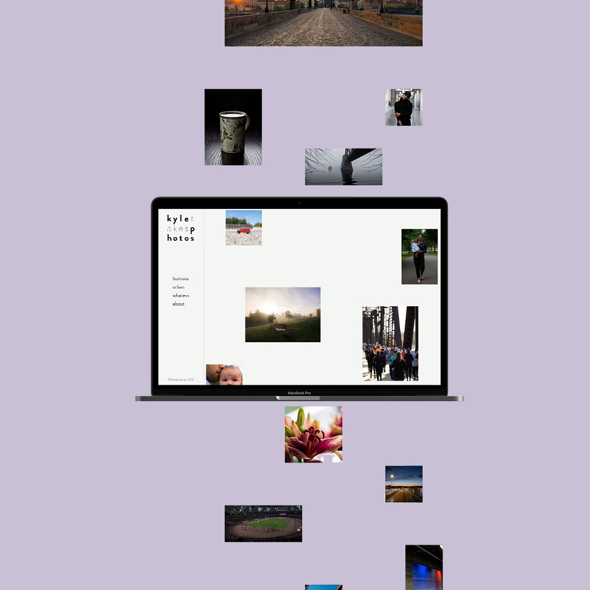
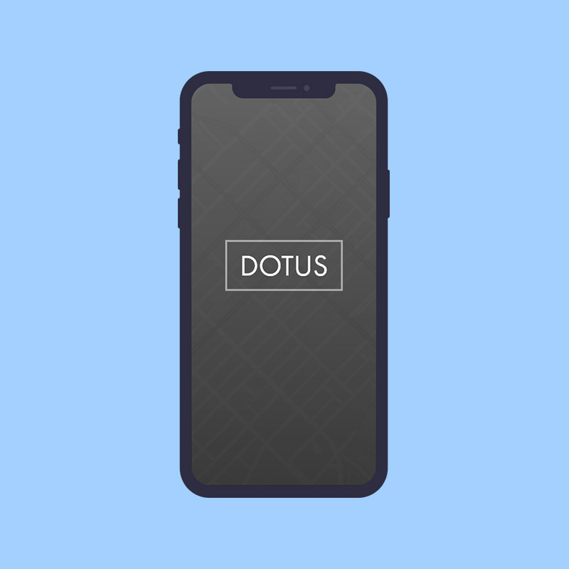

Archive: Previous projects
This is an archive of previous projects, covering different aspects of UI/UX design.
kyletakesphotos
The purpose of this project was to create a website to showcase my photography as well as to embody my creative persona. As I am a casual photographer and not tied to any specific type of photography, I wanted this site to be nonchalant, and exemplify a sense of self-discovery, like it’s figuring itself out because that’s how I am with my own photography.
View the site here.
dotus

This project is inspired by images of old photographs, juxtaposed with modern times. Named after the ancient Greek historian, Herodotus,
the idea of "DOTUS" (pronounced dot-tus) is to give the user a glimpse of what older times looked like at a famous landmark, or even just an ordinary street.
There are many directions this project could have gone in. In the end, it became a simple 360-camera view, where you visit a spot, look around through
the app and see old images superimposed (where they happened in history) as you move your device around. Though another option I came up with during conceptualization, was
a photo-diary app, where the old image is on the screen, and users align the old photo to modern day.
My end goal for this project was to find a use case for such an app, and create a demo of how it would work.